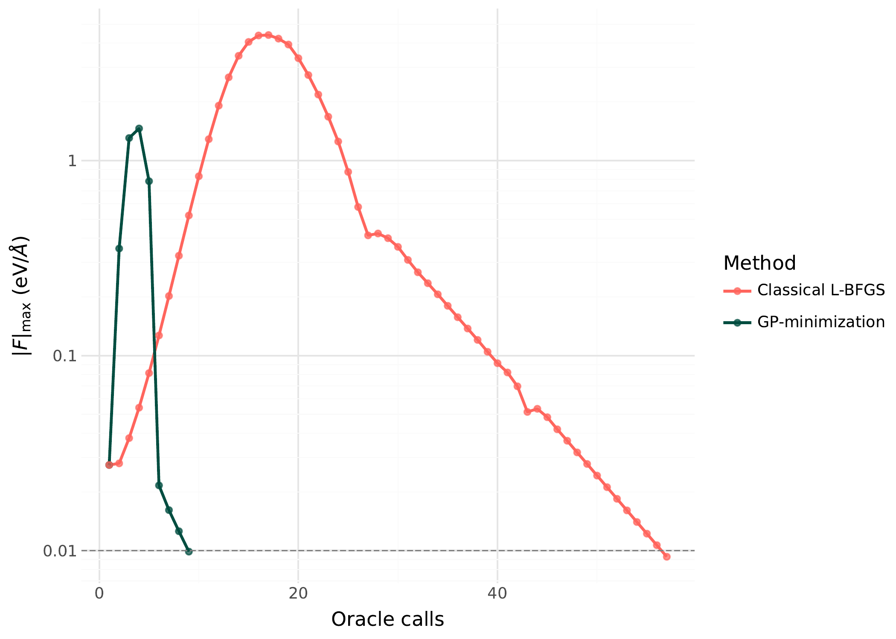

Minimization¶
GP-Guided Minimization¶
The GP minimizer (gp_minimize) replaces most oracle calls with GP predictions,
querying the true potential only when the GP uncertainty is high or when the
predicted step leaves the trust region.
This is a form of Bayesian optimization (BO): the GP provides a probabilistic surrogate of the objective, and the LCB acquisition function balances exploitation (follow the GP mean) with exploration (query uncertain regions). Unlike standard BO for black-box optimization, ChemGP exploits gradient information (1+D observations per oracle call) and uses an inner optimization loop on the surrogate rather than optimizing the acquisition function directly.
The basic idea: instead of calling the oracle at every gradient descent step, train a GP on the oracle results so far, optimize on the GP surrogate (which is free), then call the oracle only at the proposed minimum. Each oracle call is expensive (minutes for DFT); each GP prediction is cheap (microseconds). The savings compound: an optimization that needs 200 gradient descent steps needs only ~10 outer iterations, each with one oracle call.
Algorithm¶
Each outer iteration proceeds as follows:
1. FPS subset selection¶
Select the K most informative training points near the current position. Why: the full training set may contain points far from the current region that contribute little to local prediction accuracy but dominate Cholesky cost. Farthest Point Sampling (FPS) keeps points that are spread out and cover the local neighborhood.
2. Train GP hyperparameters¶
Run SCG (Scaled Conjugate Gradient) on the MAP-NLL objective using the FPS subset. Why: hyperparameters (signal variance, length scales) must adapt as the optimizer explores different regions of the PES. Training on the subset instead of full data keeps the cost manageable (O(K3\*(1+D)3) instead of O(N3\*(1+D)3)).
3. Build PredModel¶
Construct a prediction model on the full training data, using hyperparameters
from step 2. If rff_features > 0, this builds an RFF model; otherwise an
exact GP. Why train on subset but predict on full data: the FPS subset is
chosen for efficient training (avoiding large Cholesky factorizations). But for
prediction, we want the GP to use all available information, especially points
near the proposed next step that may not be in the training subset.
4. Inner L-BFGS optimization¶
Minimize the GP surrogate surface using L-BFGS within the trust region. The objective includes a soft penalty for leaving the trust region:
Why L-BFGS: it uses curvature information from gradient history, converging much faster than steepest descent on the smooth GP surface. Why soft penalty instead of hard clipping: L-BFGS needs smooth gradients; a hard trust boundary would create discontinuities that break the L-BFGS curvature model.
The L-BFGS direction is already curvature-scaled, so the step size is 1.0
(clamped by trustradius). Before L-BFGS has accumulated curvature history, the
step is trust_radius * 0.5 / ||d|| (conservative steepest descent).
5. LCB exploration¶
If the GP variance at the proposed minimum is high (sigma > 1e-4), add a variance penalty to the energy: Elcb= Egp+ kappa * sigma. Why: the GP might predict a low energy in a region where it has no data. LCB penalizes such overconfident extrapolation, steering the optimizer toward points where the GP has support.
The energy regression gate provides an additional safety check: if the predicted energy is implausibly low (more than 3 standard deviations below the observed range), the step is rejected. Why: far from training data, the GP posterior mean can extrapolate to arbitrary values. The gate catches these before they corrupt the optimization trajectory.
6. Oracle call and convergence check¶
Evaluate the true potential at the proposed point. If the gradient norm is below
conv_tol, declare convergence. Otherwise, add the new point to the training
data and return to step 1.
Muller-Brown Example¶

Muller-Brown potential energy surface. Yellow stars mark the three minima (A, B, C); coral diamonds mark the two saddle points (S1, S2). The GP minimizer is initialized near one minimum and converges in ~8 oracle calls.¶
The Muller-Brown surface is a standard 2D test potential with three minima and
two saddle points. Using the CartesianSE kernel:
cargo run --release --example mb_minimize
GP minimization converges to the nearest local minimum in 7-8 oracle calls. Direct gradient descent with the same convergence tolerance needs 34 calls, a ~5x improvement.

Energy vs oracle calls for GP-guided minimization (teal, circles) vs direct gradient descent (coral). The GP surrogate converges in fewer oracle calls because each call provides 1+D observations that update the surrogate.¶
Configuration for non-molecular surfaces¶
Non-molecular surfaces need explicit dedup_tol. The default (conv_tol * 0.1)
is designed for molecular systems where coordinate ranges and convergence
tolerances are similar in scale. For Muller-Brown, the coordinate space spans ~3
units, but a conv_tol of 10 (appropriate for the large MB gradients) gives
dedup_tol = 1.0, which rejects almost all new training points. Setting
dedup_tol = 0.001 explicitly fixes this.
Use TrustMetric::Euclidean for Cartesian surfaces (there are no interatomic
distances for EMD to operate on).
use chemgp_core::kernel::{Kernel, CartesianSE};
use chemgp_core::minimize::{gp_minimize, MinimizationConfig};
use chemgp_core::trust::TrustMetric;
let kernel = Kernel::Cartesian(CartesianSE::new(100.0, 2.0));
let mut cfg = MinimizationConfig::default();
cfg.conv_tol = 1.0;
cfg.dedup_tol = 0.001; // MB coordinates span ~3 units
cfg.n_initial_perturb = 3;
cfg.perturb_scale = 0.15;
cfg.trust_radius = 0.3;
cfg.penalty_coeff = 1000.0;
cfg.trust_metric = TrustMetric::Euclidean;
LEPS Example¶

LEPS potential energy surface for collinear H + H2 as a function of the two bond distances. The reactant valley (H + H2, lower right) and product valley (H2 + H, upper left) are connected through a transition state near r_AB = r_BC = 1.1 angstroms.¶
The LEPS surface models a collinear H + H2 reaction. Using the MolInvDistSE
kernel:
cargo run --release --example leps_minimize
GP minimization converges in 9 oracle calls to the reactant minimum (E = -4.515). Direct gradient descent needs 200 calls and still has not converged to the same precision.
{kind=link}

Energy vs oracle calls on the LEPS surface. GP minimization (teal) reaches the minimum in under 10 calls; direct gradient descent (coral) is still converging at 200 calls. The MolInvDistSE kernel captures the molecular invariances, giving the GP better generalization from fewer data points.¶
The improvement is larger here than for Muller-Brown because:
The MolInvDistSE kernel captures the molecular invariances, giving the GP better generalization from fewer points
The LEPS surface has a narrow reaction valley where gradient descent takes many small steps, but the GP learns the valley shape and jumps to the minimum
use chemgp_core::kernel::{Kernel, MolInvDistSE};
use chemgp_core::minimize::{gp_minimize, MinimizationConfig};
let kernel = Kernel::MolInvDist(
MolInvDistSE::isotropic(1.0, 1.0, vec![])
);
let cfg = MinimizationConfig::default();
// defaults work well for molecular systems
Configuration Reference¶
Parameter |
Default |
Description |
|---|---|---|
|
5e-3 |
Gradient norm convergence threshold |
|
0.1 |
Max distance from training data for trust |
|
0 (unlimited) |
Oracle call budget |
|
4 |
Number of bootstrap perturbation points |
|
0.1 |
Radius of bootstrap perturbations |
|
1e3 |
Trust region penalty in inner L-BFGS |
|
0 (exact GP) |
RFF feature count (0 = exact GP) |
|
0 (use all) |
FPS subset size (0 = no FPS) |
|
Emd |
Distance metric: Emd or Euclidean |
|
0 (auto) |
Min distance between training points |
|
0.1 |
Maximum step size per outer iteration |
|
0 (auto) |
Gate for implausible energy predictions |
Troubleshooting¶
GP not converging (force stagnation)¶
If the optimizer reports ForceStagnation, the GP predictions are not improving
between iterations. Common causes:
dedup_toltoo large: new points are being rejected as duplicates. Check thatdedup_tolis small relative to your coordinate space.trust_radiustoo small: the inner optimizer cannot reach better points. Try increasing it.Poor hyperparameter initialization: the GP is too stiff or too smooth. Check that
init_kernelis being called (it is, by default).
Too many oracle calls¶
If convergence takes more oracle calls than expected:
n_initial_perturbtoo large: wastes oracle calls on bootstrap. For molecular systems with good starting geometry, 2-3 perturbations suffice.trust_radiustoo large: the inner optimizer proposes points too far from training data, where the GP is unreliable. The oracle confirms bad predictions, wasting a call.No RFF: for large training sets (>30 points), switch to RFF to keep inner optimization fast.